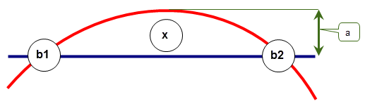

| |
Session And Local Precision |
| <<< Body Types | Chapters | Geometry >>> |
This chapter tells you about the accuracy that Parasolid uses in modelling operations. In particular, it describes:
Parasolid performs all calculations to fixed accuracies called the session precision and session angle precision.
|
The linear precision of the modeller. Distances less than this value are treated as zero and distances that differ by no more than this value are treated as equal. The session precision is returned by PK_SESSION_ask_precision. |
|
|
The smallest angle (in radians) that is treated as different from zero. Angles less than this value are treated as zero and angles that differ by no more than this value are treated as equal. The session angle precision is returned by PK_SESSION_ask_angle_precision. |
A Parasolid model is very precise; typically points are not considered coincident unless they are less than 1.0e-8 units apart (linear precision). Also, directions are considered to be parallel if they differ by less than 1.0e-11 radians. It is important that data passed to Parasolid is at least this accurate.
To allow precision to be handled correctly, all parts of a body must be within a box (called the size box) whose size is 1000 by 1000 by 1000, and is centered at the origin, as shown in Figure 16-1. You are highly recommended to set the default unit in your application code to one meter, giving 1 kilometer as the maximum distance, in any one direction, that can be modelled.
To handle the precision of arcs correctly, the radius used when creating an arc must be less than a factor of 10 times the dimension of the size box.
Figure 16-1 Linear and angular precision
If possible, we recommend that you do not use models with geometry dimensions at or near to the linear and angular precisions, in order to enhance the reliability of your models. You should try to make sure that:
Sections 16.2.1 to 16.2.4 discuss some difficult precision issues.
|
Note: There are certain situations, where geometric and topological entities fit inside the size box, but can be positioned by a large transformation outside the size box. For more information on the support Parasolid provides when working with these transformations, see Section 21.2, “Creating transformations”. |
For a body to be valid, linear precision must be transitive. Figure 16-2, for example, shows three points for which this is not the case. The distance between points 1 and 2 and points 2 and 3 is such that Parasolid would consider them coincident. However, the distance between points 1 and 3 infers that they are not. Such a body would be declared invalid.
In Figure 16-3, points ‘b1’ and ‘b2’ lie on both curves, but if distance ‘a’ is not greater than Parasolid's linear precision, Parasolid returns the intersection at ‘x’.
Figure 16-3 Tangent intersection of two curves
If angle ‘a’ is less than the angular precision of Parasolid, line ‘b1’ and the axis are returned as parallel. Subsequently spinning the line from ‘x’ to ‘y’ about the axis (the shaded area) creates a cylindrical surface, not a conical surface.
Figure 16-4 A cone that is too ‘sharp’ to be defined in Parasolid
You may sometimes want to scale parts that have been imported from other modellers, usually as a modelling operation. This may be necessary in order to ensure that the imported parts conform to Parasolid’s requirements for precision. However, scaling needs to be performed carefully, for the following reasons:
Modest scaling, up to a factor of 2, is unlikely to cause any problems.
Parts created by other modellers can be imported into Parasolid (as described in Chapter 91, “Importing Data”) and used in modelling operations. However, such parts were probably created in a modeller that uses a lower precision. Once imported, they may contain inconsistencies between their topological and geometric data: edges which, topologically, should meet at a common point have attached geometric data that does not intersect.
To enable Parasolid to model successfully with imported parts, you can set a local precision on the edges and vertices of any externally created part that contains such inconsistencies. Setting local precision in this way is known as Tolerant Modelling.
When setting local precision, think of edges as tubes, and vertices as spheres. The lower the precision, the thicker the tube or the larger the diameter of the sphere. To use Tolerant Modelling effectively, you need to examine the topology for each part, and, where there is inconsistency in the data, lower the local precision (make the tubes fatter and the spheres bigger) until the geometric data intersects. This can be done with a function such as PK_EDGE_repair, or any of the checking functionality described in Chapter 31, “Checking”.
The precision value is stored as a parameter associated with an edge or vertex. It represents the minimum distance (in 3-space) that a point and an entity must be apart in order to be distinct.
|
Note: Your application should consider the use of local precisions a modelling operation, since it can affect both the topology and the geometry of a model. |
Edges and vertices which don’t have a local precision set are considered exact by Parasolid, and have a precision of one half of the session precision.
The following subsections describe:
The result of setting precision on an edge depends on whether the edge has already had its precision changed. There are four possible scenarios:
You usually set local precision using PK_EDGE_repair, which can set an appropriate precision for you automatically. PK_EDGE_ask_precision returns the current precision for an edge.
Alternatively, you can use PK_EDGE_set_precision_2 to set local precision on an edge. This function takes the edge and the desired precision as input along with an options structure containing the following fields:
sp_method |
This datatype is used to indicate the method used to generate SP-curves. It takes the following values: |
report_short_edges |
Determines the manner in which a failure resulting from the edge or one of its neighboring edges being too short is reported. This can take the following values:
|
In Figure 16-5, edge E1 (which has Parasolid session precision) is attached to a number of other edges at vertices V1 and V2.
Figure 16-5 Initial configuration - all edges and vertices are exact
Suppose that local precision is applied to E1 using PK_EDGE_set_precision_2. Once local precision is set, the following apply (see Figure 4-6 below):
|
Note: It is important to note this difference of geometric representation between edges with and without local precision set. |
Figure 16-6 Final configuration after precision has been set
For more information about nominal geometry, see Chapter 19, “Nominal Geometry”.
Sometimes, it is not possible to compute a single SP-curve from the original curve and the relevant face surface. This is usually due to G1 discontinuities in the surface parameter space, where it is necessary to split the curve and introduce extra vertices on the edge. In such cases, the edge is split a number of times, once for every surface singularity or discontinuity on the original curve. SP-curves are then computed for every relevant fin on the new edges.
Figure 16-7 shows a simple ring edge passing through the poles of a sphere. There are two curves, split at the parameter singularities, which both have local precision set.
|
Note: If you use a function such as PK_EDGE_repair to set local precision, then edges are split automatically if any G1 discontinuities are found. |
Figure 16-7 Involving edge splitting
To set local precision correctly, the edge is split into two and SP-curves attached to the relevant fins. Any edges created by this means are returned in a list.
The fins of edge E1 have coincident and reversed SP-curves attached (single-segment linear SP-curves in this example, though more generally they would be quadratic B-splines).
The simplest way to set an appropriate precision on an edge that already has local precision is to use PK_EDGE_optimise. This function attempts to reset the precision on an already tolerant edge to a value that lies between a given precision (which can be the current precision), and a maximum deviation determined by the greatest deviation between any of the curves attached to the edge. Thus, PK_EDGE_optimise attempts to lower the current precision, without making it too small for the SP-curves attached to the edge. By default, short edges are not optimised. If you wish to optimise them, set
optimise_short
to PK_EDGE_optimise_yes_c. An edge is considered a short edge if all positions along that edge lie within at least one of the vertex bubbles.
Alternatively, you can use PK_EDGE_set_precision_2 to set the local precision of an edge to a different value, regardless of the SP-curves on the edge. Note that the existing SP-curves are not replaced, even if the precision value supplied is numerically smaller. The precision of any vertices of the edge is set to the supplied value if this is greater than the value already stored there, otherwise, they are left alone. Figure 16-8 shows the effect of resetting edge precision for the edge shown in Figure 16-6.
Figure 16-8 Resetting edge precision to (a) a smaller value (b) a larger value
You can use PK_EDGE_reset_precision_2 to remove local precision from an edge, so that it is once more represented geometrically by an unbounded 3-space curve. In order to recreate this curve, Parasolid removes the SP-curves attached to the edge, and computes the position of the new curve by finding the intersection of the underlying surfaces for each face. This is illustrated in Figure 16-9.
Figure 16-9 Removing local precision from an edge
This operation may not always be successful if the adjacent surfaces are tangent or nearly tangent.
You can control how the edge geometry is determined using the
method
option. This option has the following values:
|
Any curve that is coincident within session precision to the adjacent surfaces is acceptable. |
|
|
|
When local precision is applied to a vertex, the precision value represents the radius of a sphere of uncertainty around the point of the vertex. The lower the precision, the larger the precision value, and the larger the sphere of uncertainty.
Vertex precision is usually set as a by-product of setting edge precision, either by calling PK_EDGE_set_precision_2 or by other modelling operations. In addition, vertex precision may be modified when calling PK_VERTEX_optimise. Your application should not normally need to set an individual precision for a vertex. However, if necessary, you can use PK_VERTEX_set_precision to set a vertex precision, provided that:
PK_VERTEX_ask_precision returns the current precision of any vertex.
Depending on the functionality in your application, you may need to export model data that contains tolerance information from Parasolid into other systems. Many of these external systems place constraints on the representations that they will accept, and you can address this by ensuring that the tolerance information on your models is as optimal as possible.
You can use PK_LOOP_close_gaps and PK_FACE_close_gaps to improve the tolerance information at vertices by ensuring that loops are closed, either in model space or parameter space. These functions receives either a loop or a face (depending on the function you use) on which there should be vertices that contain tolerance information, together with an options structure with the following options:
gap_in_3_space |
Whether to close gaps in the loop at tolerant vertices in model space. If set to PK_LOOP_3_space_gap_close_c, the SP-curves at tolerant vertices are modified wherever possible so as to close the loop. Default: PK_LOOP_3_space_gap_close_c. |
gap_in_2_space |
Whether to close gaps in the loop at tolerance vertices in parameter space. Default: PK_LOOP_2_space_gap_no_c. If set to PK_LOOP_2_space_gap_minimise_c, any gaps in parameter space between adjacent fins are minimised if possible by transforming the parameter space B-curves underlying the SP-curves so that they meet in the same period. This value only has an effect if the surface attached to the received loop’s face is periodic. See “Closing gaps in periodic faces”. If set to PK_LOOP_2_space_gap_close_cu_c, any gaps in parameter space between adjacent fins are minimised if possible by extending or trimming the SP-curves to meet within the tolerance specified in tol_in_2_space. See “Closing gaps by extending and trimming SP-curves”. If set to PK_LOOP_2_space_gap_close_all_c, SP-curves are extended or trimmed to minimise gaps to within tol_in_2_space if possible. If this is not possible, then the underlying surface is reparameterised. See “Closing gaps by reparameterising the surface”. |
tol_in_2_space |
A tolerance value for controlling the parameter space gap at tolerant vertices in the loop. If |
trim_fin_geom |
Whether to remove that part of the SP-curve geometry on tolerant edges that lies outside the bounds of the fins that comprise those edges. Default: PK_LOOP_trim_geom_no_c. |
|
Note: This functionality does not support facet geometry. |
In the example shown in Figure 16-10, a cylindrical body has edges at the seams of the underlying cylindrical surface (corresponding to u=0) and at u=pi. When tolerance information is placed on all the edges in the cylinder, then both fins of the edge at the seam have SP-curves at u=0. This means that one of the cylinder’s loops is not closed in parameter space, as shown.
If you set
gap_in_2_space
to PK_LOOP_2_space_gap_minimise_c, PK_LOOP_close_gaps and PK_FACE_close_gaps transform the underlying B-curve of the shared SP-curve such that the loop is closed in parameter space, as shown. In addition, it correctly identifies which is the high seam and which is the low seam.
Figure 16-10 Closing loops in parameter space for a tolerant cylinder
Figure 16-11 shows a simple example in which gaps in the loop can be closed by extending or trimming the relevant SP-curves. If you set
gap_in_2_space
to PK_LOOP_2_space_gap_close_cu_c, PK_LOOP_close_gaps and PK_FACE_close_gaps modify the SP-curves attached to the face as relevant, in order to close any gaps, as shown.
Figure 16-11 Closing loops in parameter space by extending and trimimng SP-curves
In the example shown in Figure 16-12, the face shown has an open loop that cannot be closed by extending or trimming the attached SP-curves. Instead, the only possible workaround is to reparameterise the surface so as to minimise the gap between the existing SP-curves.
If you set
gap_in_2_space
to PK_LOOP_2_space_gap_close_all_c, PK_LOOP_close_gaps and PK_FACE_close_gaps reparamaterise the surface, in order to minimise the gap in the loop, as shown.
Figure 16-12 Closing gaps in parameter space by reparameterising the surface
| <<< Body Types | Chapters | Geometry >>> |